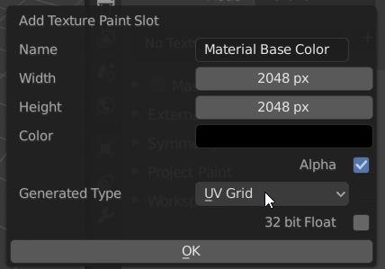
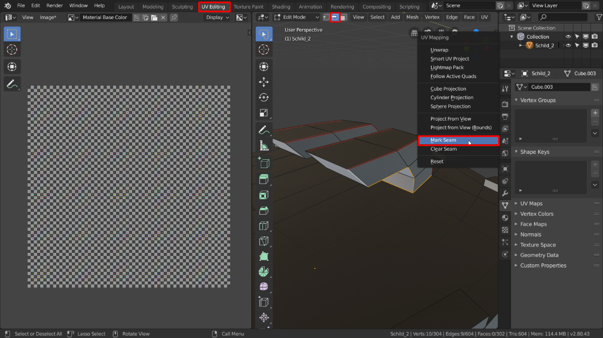

Übung 5.1 - UV Editing
In der folgenden Aufgabe bereiten wir den Schild für die Texturierung vor. Dafür müssen wir Blender mitteilen, wie die 2D Textur auf das 3D Objekt projeziert werden soll. Dieser Vorgang wird UV-Editing genannt.
1. Vorbereitung

Öffnet euren zuvor modelliertes Schild. Alternativ kann auch dieses Modell verwendet werden.
Selektiert den Schild
Wechselt in den Texture Paint Workspace
Fügt unter Texture Slots eine neue UV-Grid Textur als “Base Color” hinzu

Stellt die Auflösung auf die gewünschte Größe (z.b. 2048x2048) und wählt als Typ UV-Grid aus
Klickt einmal auf den neuen Texturslot, um die Textur anzuzeigen
Diese einfache Karomuster-Textur dient uns später als Hilfe, um Verzerrungen in der Texturprojektion zu erkennen.
Wechselt in den UV Editing Workspace
Stellt die Ansicht auf LookDev um (im Header mit Mausrad scrollen)
2. Nähte markieren
Für den Schild soll nun eine sogenannte UV-Map erstellt werden, die dafür sorgt, dass 2D Texturen auf einem 3D Objekt dargestellt werden können. 
Stellt den Selektionsmodus auf Kanten (Shortcut
2- geht nur wenn die Taste nicht von Emulate Numpad belegt ist)Legt Kanten fest an denen die Kanten der UV Map liegen sollen. Wählt dazu im Editmode eine/mehrere Kanten aus (vorher
2drücken, um den Selektionsmodus auf Kanten umzustellen) und drückt Rechtsklick oderU. Wählt im erscheinendem Menü Mark Seam aus. Die so markierten Kanten werden Rot hervorgehoben.Wollt ihr markierte Nähte wieder löschen, kommt die Option Clear Seam unter Mark Seam zum Einsatz.
Die UV Map kann man sich vorstellen wie z.b. ein Schnittplan für ein Kleidungsstück, das wir dem 3D Körper anziehen. Die Kanten die mit Mark Seam markiert wurden sind hierbei die Nähte.

3. Unwraping und UV Editing

Wählt im Editmodus das gesamte Schild aus und drückt
U. Wählt im erscheinenden Menü Unwrap aus.Im UV Editor links sollte nun das Mesh des Schildes als 2D Netz sichtbar sein und Karos der Textur sollten auf dem Schild erscheinen.
Sind die Karos stark verzerrt, markiert (wie in Schritt 2 beschrieben) weitere Kanten die euch wichtig erscheinen und Unwrapt den Torso erneut mit
U.Falls nötig, schiebt, skaliert und rotiert die sogen. UV-Islands (zusammenhängende Teile der UV Map) die im Image Editor entstanden sind nun so, dass die Kästchen überall auf dem Schild etwa gleich groß sind und möglichst effizient die Textur ausfüllen. Sie sollten sich an keiner Stelle überschneiden.
Die Selektionswerkzeuge funktionieren gleich, wie in der 3D-Ansicht. Mit
Lwerden unter der Maus zusammenhängende Teile der UV-Map selektiertAngezeigt im UV Editor werden immer nur die Teile des Meshes, die im 3D Viewport markiert sind.

Die Auswahl und Transformationswerkzeuge funktionieren im UV Editor gleich, wie im Editmode des 3D Viewports.
Ressourcen & Tutorials zum Thema
| Art/Länge | Titel | Thema | Quelle |
|---|---|---|---|
| UV Unwrapping - Blender 2.80 Fundamentals | Materialien | YouTube - Blender (offizieller Kanal) | |
| Blender 2.8 Beginner Tutorial - Part 6: UV Unwrapping | UV-Editing | YouTube - CG Boost | |
| 20 Tips to Speed Up UV Mapping in Blender | UV-Editing | YouTube - CG Boost | |
| Blender Reference Manual - UV Introduction | UV Dokumentation | Blender Dokumentation |
Aufgabe
- Bereitet das Schild mittles UV Editing so vor, dass die Karos Checker Textur gleichmäßig und ohne Überlappungen auf dem Schild dargestellt werden.
- Anweisungen für die Abgabe folgen in 5.2
gelernte Shortcuts
| Funktion | Kontext | Shortcut |
|---|---|---|
| Nähte festlegen (mark seam) | Edit Mode | U |
| Unwrap | Edit Mode | U |
| Zusamenhängende Teile selektieren | Edit Mode / UV-Editor | L |